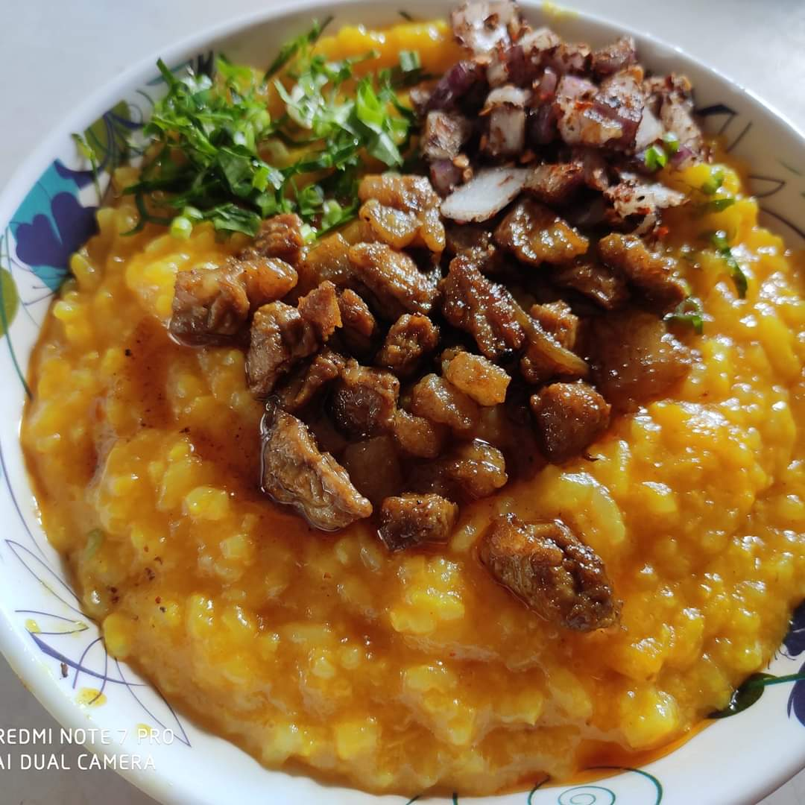

Sawhchiar (a Mizo dish) Recipie
Description:

This is a Mizo Sawhchiar
Ingredients:
- Buh (rice)
- Water
- Salt
- Edible oil
Steps:
- Boil water until it reaches boiling point.
- Add 2/3 cup of rice
- As the rice begins to get softer, add salt
- Put the stove in medium heat
- Add a little bit of oil and stir
- Wait until the mixture becomes soft and consistent
- Now you can add any toppings you like
- Then, you are done.
Home